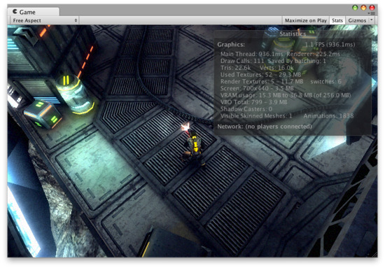

Game View

The Game View is rendered from the Camera(s) in your game. It is representative of your final, published game. You will need to use one or more Cameras to control what the player actually sees when they are playing your game. For more information about Cameras, please view the Camera Component page.
Play Mode

Use the buttons in the Toolbar to control the Editor Play Mode and see how your published game will play. While in Play mode, any changes you make are temporary, and will be reset when you exit Play mode. The Editor UI will darken to remind you of this.
Game View Control Bar

The first drop-down on the Game View control bar is the Aspect Drop-down. Here, you can force the aspect ratio of the Game View window to different values. It can be used to test how your game will look on monitors with different aspect ratios.
Further to the right is the toggle. While enabled, the Game View will maximize itself to 100% of your Editor Window for a nice full-screen preview when you enter Play mode.
Continuing to the right is the button. This shows Rendering Statistics window that is very useful for monitoring the graphics performance of your game (see Optimizing Graphics Performance for further details).

The last button is the toggle. While enabled, all Gizmos that appear in Scene View will also be drawn in Game View. This includes Gizmos drawn using any of the Gizmos class functions. The Gizmos button also has a popup menu showing the various different types of Components used in the game.

Next to each Component's name are the settings for the icon and gizmos associated with it. The Icon setting reveals another popup menu which lets you choose from a selection of preset icons or a custom icon defined by a texture.

The Gizmo setting enables you to selectively disable Gizmo drawing for specific components.
The 3D Gizmos setting at the top of the menu refers to the Gizmo icons. With the setting enabled, the icons will show the perspective of the camera (ie, icons for nearby objects will be larger than those for distant objects), otherwise they will be the same size regardless of distance. The slider next to the checkbox allows you to vary the size of the icons, which can be useful for reducing clutter when there are a lot of gizmos visible.
Page last updated: 2012-10-19